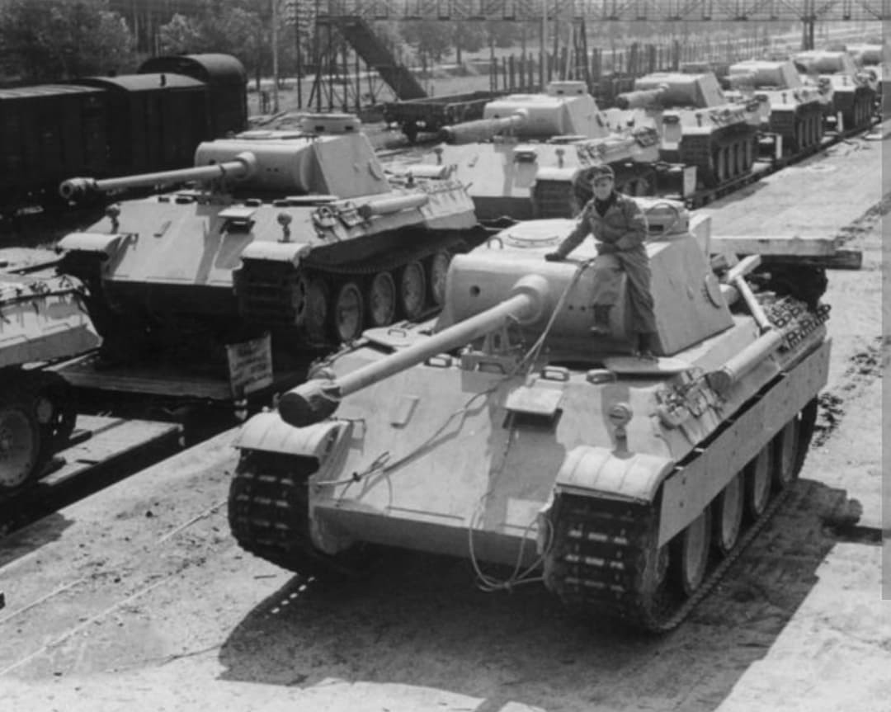

Introduction
Considéré par de nombreux historiens militaires comme l'un des meilleurs chars d'assaut de la Seconde Guerre mondiale, le Panzerkampfwagen V Panther (Sd.Kfz. 171) a été conçu pour contrer la supériorité numérique et technique des T-34 soviétiques découverts lors de l'invasion de l'URSS en 1941.
Alliant pour la première fois chez les Allemands un **blindage frontal incliné**, une excellente mobilité sur chenilles larges et la puissance de feu dévastatrice du canon de 75 mm KwK 42 L/70, le Panther est devenu la colonne vertébrale des Panzer-Divisionen de 1943 à 1945.
Origine et caractéristiques techniques
Développé par la firme **MAN** pour remplacer les Panzer III et Panzer IV, le Panther s'inspire directement du T-34 soviétique pour la forme inclinée de sa superstructure, augmentant l'épaisseur effective de ses plaques d'acier face aux obus perforants.
Propulsé par un moteur Maybach V12 de 700 chevaux, ce blindé de 45 tonnes atteignait une vitesse maximale de 45 km/h. Son armement principal, le canon **7,5 cm KwK 42 L/70**, possédait une vélocité initiale exceptionnelle permettant de percer la majorité des blindés alliés à plus de 1 500 mètres de distance.

1943–1945 : De l'enfer de Koursk au bocage normand
Engagé précipitamment pour la première fois en juillet 1943 lors de la **bataille de Koursk** (Opération Citadelle), le Panther souffrit à ses débuts de graves pannes mécaniques de jeunesse. Une fois ces défauts corrigés sur les versions Ausf. A et Ausf. G, le Panther s'imposa comme un adversaire redoutable.
En Normandie durant l'été 1944, dissimulés dans le bocage ou en embuscade près de Caen et Saint-Lô, les Panther infligèrent de très lourdes pertes aux Sherman américains et britanniques. Ils jouèrent également un rôle central lors de la contre-offensive des Ardennes en décembre 1944 et dans la défense ultime du sol allemand.

Bilan et héritage
Produit à plus de **6 000 exemplaires** entre 1943 et 1945, le Panther était techniquement supérieur à la plupart de ses rivaux directs, bien que sa fabrication complexe et le manque de ressources de l'Allemagne nazie aient limité son impact stratégique global.
Son design révolutionnaire associant blindage incliné, puissance de feu à haute vélocité et mobilité sur chenilles larges a profondément influencé le développement des premiers chars de combat principaux (*Main Battle Tanks*) d'après-guerre, notamment en France où plusieurs dizaines de Panther capturés ont été intégrés dans l'armée française jusqu'au début des années 1950.
Voir aussi
Page du Musée HOP WW2 – Section Véhicules Terrestres Allemands